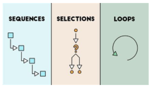

O que a Lógica tem a ver com a Computação?
Agora que estamos mais familiarizadas com Lógica e Testes de Lógica, vamos entender como isso se relaciona com a Computação.
A Programação envolve basicamente três processos:
Sequências;
Seleções;
Loops.
E todos esses são processos lógicos!

Avante! 🚀